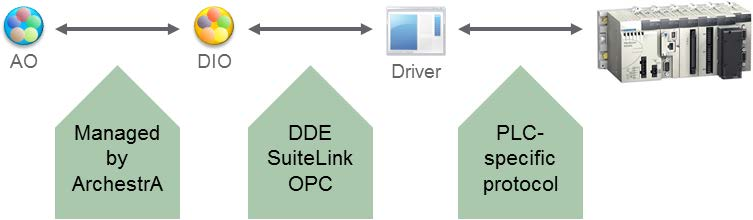
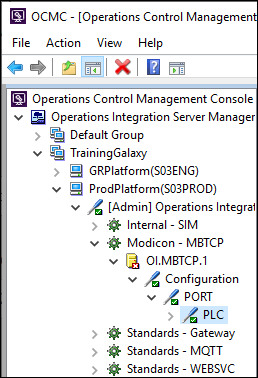
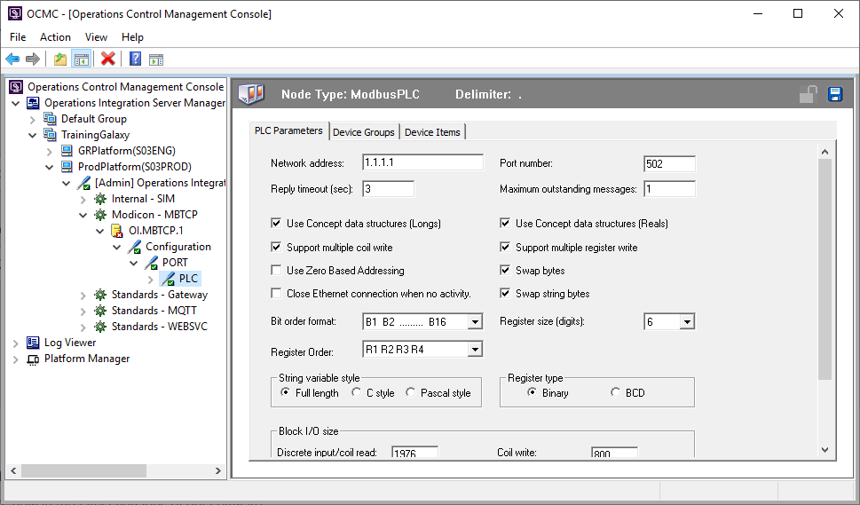
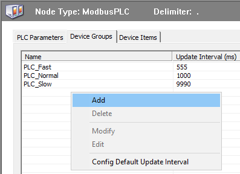
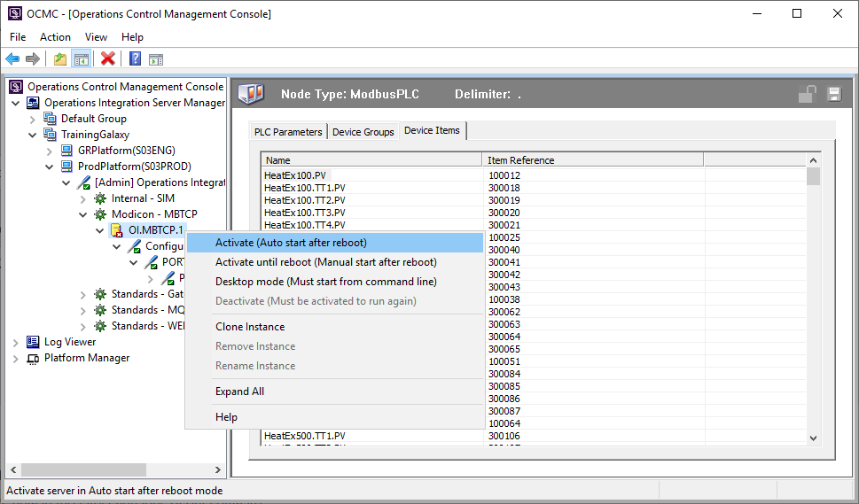
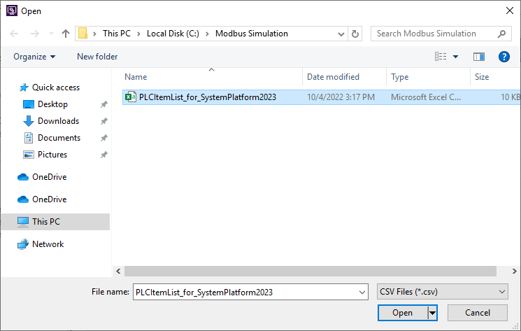
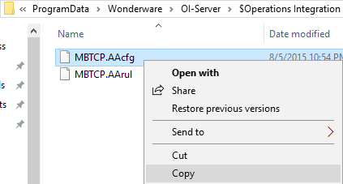

Module 5 — Device Integration & Operations Integration Servers (page 5-3)
Source: AVEVA Application Server 2023 Training Manual, Module 5, Section 1 (pages 5-3 to 5-6)
Module 5 — Introduction to Device Integration & Operations Integration Servers
Reference: Module 5, Section 1 (pages 5-3 to 5-4)
Your Application Server Galaxy objects need to talk to real-world field devices — PLCs, RTUs, DCS controllers — to read and write process data. But Application Server doesn't talk directly to field hardware. Instead, it uses a layered communication architecture with dedicated servers in between.
The diagram below shows the complete communication path from an Application Object all the way down to the physical PLC:

Each layer in the chain has a specific responsibility:
| Layer | Component | Protocol(s) |
|---|---|---|
| Application Object | Your automation object in the Galaxy (e.g., a tag, a symbol instance) | — |
| Client Interface | DDESuiteLinkClient (built into the object) | DDE, SuiteLink, OPC |
| OI Server | Operations Integration Server — a standalone service that manages communication | DDE, SuiteLink, OPC (upstream); PLC-specific protocol (downstream) |
| Field Device | PLC, RTU, DCS controller | Proprietary protocol (Modbus, Allen-Bradley, Siemens, etc.) |
It's important to understand that the OI Server speaks two different languages on two different sides:
| Protocol | Type | Notes |
|---|---|---|
| DDE | Dynamic Data Exchange | Legacy Windows protocol. Simple but limited — no built-in diagnostics or quality indicators. |
| SuiteLink | AVEVA proprietary | Better than DDE — provides quality indicators, timestamps, and diagnostics. Recommended for Wonderware/AVEVA ecosystems. |
| OPC | Open Platform Communications | Industry-standard protocol. Most widely supported across different vendor systems. |
Reference: Module 5, Section 1 (pages 5-4 to 5-5)
An Operations Integration (OI) Server is a standalone software service that manages communication between Application Server and field devices. Each OI Server is designed for a specific family of devices (e.g., Modicon/Modbus, Allen-Bradley, Siemens).
The Operations Control Management Console (OCMC) shows the hierarchical relationship between your Galaxy, the deployment platform, and the OI Servers configured on it. The hierarchy is read top-down, from the Galaxy down to the specific PLC device:

| Level | Example | Meaning |
|---|---|---|
| Galaxy | TrainingGalaxy | The application being served |
| Platform | ProdPlatform (S03PROD) | The physical computer hosting the OI Server |
| OI Server Type | Modicon MBTCP | The driver family — Modbus TCP for Modicon PLCs |
| OI Server Instance | OI.MBTCP.1 | A specific configured instance of the driver |
| Configuration | PORT → PLC | The port and PLC device being managed |
Reference: Module 5, Section 1 (pages 5-5 to 5-6)
Each OI Server instance requires configuration to match the physical PLC it communicates with. The most important settings are on the PLC Parameters tab:

| Parameter | Example Value | Purpose |
|---|---|---|
| Node Type | ModbusPLC | The type of device — determines which protocol dialect to use |
| IP Address | 1.1.1.1 | Network address of the PLC |
| Port | 502 | Network port (502 is standard for Modbus TCP) |
| Reply Timeout | 3 seconds | How long to wait for a PLC response before declaring a timeout |
| Swap Bytes | Checked | Whether to swap byte order — depends on PLC endianness |
| Register Size | 6 | Size of data registers to read |
| Register Type | Binary | How to interpret the register data |
Reference: Module 5, Section 1 (page 5-6)
An OI Server doesn't just blindly poll every register on the PLC. It organizes data requests into Device Groups, each with its own update interval. This lets you control how fast different types of data are refreshed.

Within each device group are individual Device Items — the specific PLC addresses (registers, coils) that map to your Application Server tags.

You can right-click a device item to access additional options such as Activate Auto start after reboot, which ensures the device communication starts automatically when the OI Server machine restarts.

Reference: Module 5, Section 1 (page 5-6)
All OI Server configuration is stored on disk in the Wonderware/OI-Server directory. The key files are:

| File Extension | Purpose |
|---|---|
.AAcfg | OI Server configuration — all PLC parameters, device groups, and device items |
.AArul | OI Server rules — communication rules and filtering logic |
Here's how all the pieces fit together when you connect Application Server to a real PLC:
| Step | Where | What You Do |
|---|---|---|
| 1 | OCMC | Create OI Server instance for your PLC family |
| 2 | OCMC — PLC Parameters tab | Set IP, port, timeout, byte order |
| 3 | OCMC — Device Groups tab | Create groups with update intervals |
| 4 | OCMC — Device Items | Map PLC addresses to groups (or import CSV) |
| 5 | Application Server IDE | Configure tag communication paths |
| 6 | OCMC / IDE | Deploy and verify communication |
Q1: What is the role of an OI Server in the communication architecture?
The OI Server acts as a bridge between Application Server and field devices. It translates standard protocols (DDE, SuiteLink, OPC) used by Application Server into PLC-specific proprietary protocols used by field devices.
Q2: What are the three communication protocols that Application Server can use to talk to an OI Server?
DDE (Dynamic Data Exchange), SuiteLink (AVEVA proprietary), and OPC (Open Platform Communications).
Q3: If your PLC data values appear garbled or incorrectly byte-ordered, which OI Server parameter should you check first?
The Swap Bytes setting. Different PLC manufacturers use different byte orders (big-endian vs. little-endian), and swapping bytes incorrectly will produce wrong numeric values.
Q4: What is the purpose of Device Groups in OI Server configuration?
Device Groups organize data items by refresh rate. This lets you control how fast different types of data are polled from the PLC, optimizing network bandwidth and PLC processor load.
Q5: What file extensions are used for OI Server configuration, and why should you back them up?
.AAcfg (configuration) and .AArul (rules). You should back them up because they contain the entire OI Server configuration — if the server fails or needs reinstalling, restoring these files gets you back up quickly.
Click each answer to reveal it.
Next: Lesson 16 — Lab 9: Configuring an OI Server for Modbus TCP